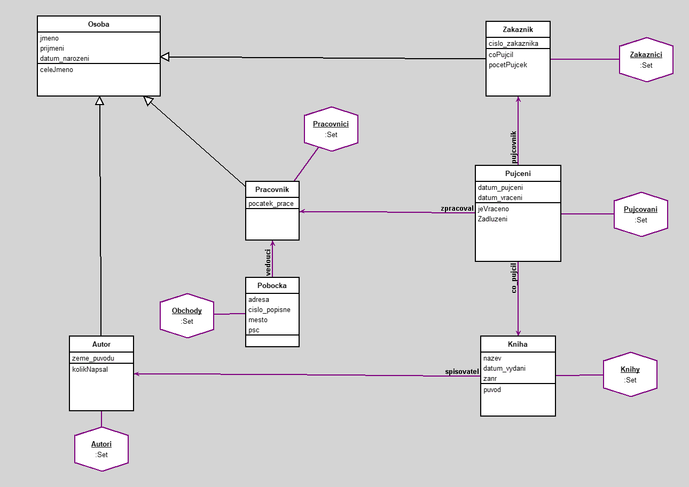

Knihovna
author(s): Carikov Leonid
Ukazka systemu knihovny
Zakaznik si muze pukcit knihu. Pujceni zpracovava pracovnik na pobocce.
V systemu se pise datum pujceni, datum vraceni v pripade jestli zakaznik knihu vratil, jakou knihu pujcil, kdo ji pujcil a kdo to zpracoval.
Kazda kniha ma zanr, datum vydani, informace o originalnim jazyku a jmeno autora.
Tridy a jejich atributy
- Osoba : jmeno, prijmeni, datum_narozeni
- Zakaznik: cislo_zakaznika
- Pracovnik: pocatek_prace
- Autor: zeme_puvodu
- Pobocka: adresa, cislo_popisne, mesto, psc
- Kniha: nazev, datum_vydani, zanr
- Pujceni: datum_pujceni, datum_vraceni
Workspace
"Vypise co zakaznik s jmenem Leonid pujcil"
(Zakaznici select: [:x | x jmeno = 'Leonid'])
collect: [:y | y coPujcil]
"vypise co bylo vraceno"
Pujcovani select: [:x | x jeVraceno]
"Vypise knihy ktere byly pujcene a jejimz autorem je Alexandr"
Pujcovani select: [:x | x co_pujcil spisovatel jmeno = 'Alexandr']
"Vypise Pujcene knihy ktere nebyly vraceny a trva to vic jak 90 dnu"
Pujcovani select: [:x | x Zadluzeni and: [x jeVraceno not]]
"Vypise zakazniky ktere pujcili vic nez jednu knihu"
Zakaznici select: [:x | x pocetPujcek > 1]
"Vypise autory u kterych je v knihovne vic nez jedna kniha"
Autori select: [:x | x kolikNapsal > 1]
"Pravidlo - Vsechny pujcky maji datum pujceni"
(Pujceni allInstances select: [:x | x datum_pujceni isNil]) isEmpty
"Pravidlo - Vsechny pucky zpracoval pracovnik"
(Pujceni allInstances select: [:x | x zpracoval isNil]) isEmpty
"Pravidlo - Vsechny knihy museji mit autora"
(Kniha allInstances select: [:x | x spisovatel isNil]) isEmpty
Workspace Objects
-
Autori :Set
-
Knihy :Set
-
Obchody :Set
-
Pracovnici :Set
-
Pujcovani :Set
-
Zakaznici :Set
Script
Knihy := Set new.
Obchody := Set new.
Pujcovani := Set new.
Zakaznici := Set new.
Pracovnici := Set new.
Autori := Set new.
a1 := Autor new.
a1 jmeno: 'Alexandr'.
a1 prijmeni: 'Puskin'.
a1 zeme_puvodu: 'Rusko'.
a1 datum_narozeni: '6 Jun 1799' asDate.
Autori add: a1.
a2 := Autor new.
a2 jmeno: 'Karel'.
a2 prijmeni: 'Capek'.
a2 zeme_puvodu: 'Cesko'.
a2 datum_narozeni: '9 Jan 1890' asDate.
Autori add: a2.
a3 := Autor new.
a3 jmeno: 'George'.
a3 prijmeni: 'Orwell'.
a3 zeme_puvodu: 'Anglie'.
a3 datum_narozeni: '25 Jun 1903' asDate.
Autori add: a3.
a4 := Autor new.
a4 jmeno: 'Ernest'.
a4 prijmeni: 'Hamingway'.
a4 zeme_puvodu: 'Anglie'.
a4 datum_narozeni: '21 Jul 1899' asDate.
Autori add: a4.
z1 := Zakaznik new.
z1 jmeno: 'Leonid'.
z1 prijmeni: 'Carikov'.
z1 cislo_zakaznika: '12345'.
z1 datum_narozeni: '10 Dec 2003' asDate.
Zakaznici add: z1.
z2 := Zakaznik new.
z2 jmeno: 'Jan'.
z2 prijmeni: 'Novak'.
z2 cislo_zakaznika: '79878'.
z2 datum_narozeni: '15 Dec 2005' asDate.
Zakaznici add: z2.
z3:= Zakaznik new.
z3 jmeno: 'Vladimir'.
z3 prijmeni: 'Scerbakov'.
z3 cislo_zakaznika: '54321'.
z3 datum_narozeni: '9 Nov 2002' asDate.
Zakaznici add: z3.
p1 := Pracovnik new.
p1 jmeno: 'Petr'.
p1 prijmeni: 'Blaha'.
p1 pocatek_prace: '14 Feb 2024' asDate.
p1 datum_narozeni: '26 Nov 1999' asDate.
Pracovnici add: p1.
p2 := Pracovnik new.
p2 jmeno: 'Jakub'.
p2 prijmeni: 'Fiala'.
p2 pocatek_prace: '1 Dec 2020' asDate.
p2 datum_narozeni: '7 May 1987' asDate.
Pracovnici add: p2.
b1 := Kniha new.
b1 nazev: 'Starec a More'.
b1 datum_vydani: '1 Sep 1952' asDate.
b1 zanr: 'Novela'.
b1 spisovatel: a4.
Knihy add: b1.
b2 := Kniha new.
b2 nazev: '1984'.
b2 datum_vydani: '8 Jun 1949' asDate.
b2 zanr: 'Roman'.
b2 spisovatel: a3.
Knihy add: b2.
b3 := Kniha new.
b3 nazev: 'Ruslan a Ludmila'.
b3 datum_vydani: '1 Jan 1820' asDate.
b3 zanr: 'Poema'.
b3 spisovatel: a1.
Knihy add: b3.
b4 := Kniha new.
b4 nazev: 'R.U.R.'.
b4 datum_vydani: '1 Jan 1920' asDate.
b4 zanr: 'Drama'.
b4 spisovatel: a2.
Knihy add: b4.
b5 := Kniha new.
b5 nazev: 'Bila Nemoc'.
b5 datum_vydani: '1 Jan 1937' asDate.
b5 zanr: 'Drama'.
b5 spisovatel: a2.
Knihy add: b5.
s1 := Pobocka new.
s1 adresa: 'Jana Masaryka'.
s1 cislo_popisne: '10'.
s1 mesto: 'Praha'.
s1 psc: '12000'.
s1 vedouci: p1.
Obchody add: s1.
s2 := Pobocka new.
s2 adresa: 'Veslarska'.
s2 cislo_popisne: '199'.
s2 mesto: 'Brno'.
s2 psc: '63700'.
s2 vedouci: p2.
Obchody add: s2.
r1 := Pujceni new.
r1 datum_pujceni: '14 Nov 2024' asDate.
r1 datum_vraceni: '20 Dec 2024' asDate.
r1 pujcovnik: z1.
r1 co_pujcil: b1.
r1 zpracoval: p1.
Pujcovani add: r1.
r2 := Pujceni new.
r2 datum_pujceni: '1 Jun 2023' asDate.
r2 datum_vraceni: '15 Jul 2023' asDate.
r2 pujcovnik: z2.
r2 co_pujcil: b2.
r2 zpracoval: p2.
Pujcovani add: r2.
r4 := Pujceni new.
r4 datum_pujceni: '1 Nov 2024' asDate.
r4 datum_vraceni: nil.
r4 pujcovnik: z3.
r4 co_pujcil: b4.
r4 zpracoval: p2.
Pujcovani add: r4.
r3 := Pujceni new.
r3 datum_pujceni: '1 Jun 2024' asDate.
r3 datum_vraceni: nil.
r3 pujcovnik: z3.
r3 co_pujcil: b3.
r3 zpracoval: p2.
Pujcovani add: r3.
Diagram

Classes
Pobocka
|
instance variables
adresa :String
cislo_popisne :String
mesto :String
psc :String
vedouci :Object
|
methods
adresa
adresa:
cislo_popisne
cislo_popisne:
initialize
mesto
mesto:
psc
psc:
vedouci
vedouci:
|
|
Vsechny pobocky ktere jsou
|
code of non-accessing methods:
Kniha
|
instance variables
datum_vydani :Date
nazev :String
spisovatel :Object
zanr :String
|
methods
datum_vydani
datum_vydani:
initialize
nazev
nazev:
puvod
spisovatel
spisovatel:
zanr
zanr:
|
|
Knihy ktere jsou a jejich zakladni informace
|
code of non-accessing methods:
Pujceni
|
instance variables
co_pujcil :Object
datum_pujceni :Date
datum_vraceni :Date
pujcovnik :Object
zpracoval :Object
|
methods
co_pujcil
co_pujcil:
datum_pujceni
datum_pujceni:
datum_vraceni
datum_vraceni:
initialize
jeVraceno
pujcovnik
pujcovnik:
Zadluzeni
zpracoval
zpracoval:
|
|
Proces ktery uklada informace o zapujceni knihy
|
code of non-accessing methods:
Osoba
|
instance variables
datum_narozeni :Date
jmeno :String
prijmeni :String
|
methods
celeJmeno
datum_narozeni
datum_narozeni:
initialize
jmeno
jmeno:
prijmeni
prijmeni:
|
|
Trida rodic pro osoby
|
code of non-accessing methods:
-
celeJmeno
^self jmeno , ' ' , self prijmeni
-
initialize
"generated by Daskalos"
super initialize.
jmeno := nil.
prijmeni := nil.
datum_narozeni := nil.
Zakaznik
|
instance variables
cislo_zakaznika :String
|
methods
cislo_zakaznika
cislo_zakaznika:
coPujcil
initialize
pocetPujcek
|
|
Zakaznik ktery si muze knihu pujcit
|
code of non-accessing methods:
Pracovnik
|
instance variables
pocatek_prace :Date
|
methods
initialize
pocatek_prace
pocatek_prace:
|
|
Pracovnik ktery pracuje v knihovne
|
code of non-accessing methods:
Autor
|
instance variables
zeme_puvodu :String
|
methods
initialize
kolikNapsal
zeme_puvodu
zeme_puvodu:
|
|
Autory knih
|
code of non-accessing methods:
Links
Data file and
class source.
Generated by Daskalos - Object Modeling Tutor (C) 2006 V. Merunka
19.04.2025г.